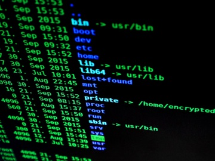
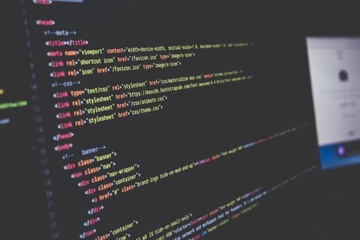

Arbetssätt
Mina kurser finns alla samlade digitalt genom Google Sites. På så sätt
finns beskrivningar, föreläsningar och instruktioner på samma ställe
och eleverna behöver inte hantera flera olika filer. Varje kurs har
sin egen sida som publiceras vid början av kursen. Eleverna kan när
som ta till sig missat material eller läsa på för kommande lektioner.
För att komplettera klassiska instuderingsarbeten så finns en
egenutvecklad faktabok till samtliga kurser. Med hjälp av faktaboken
behöver elever inte tappa bort sig i googlande (eller ChatGPT) under
lektionstid, utan kan läsa sig till fakta på ett och samma ställe.
Moduler och arbeten inleds vanligtvis med föreläsningar där grunden
för kommande lektioner läggs. Elever uppmanas att skriva ner egna
anteckning baserat på markerade ord i bildspelen. Former för
arbetsmomenten blandas mellan instudering, praktiskt, gruppbaserat,
diskussioner osv.
Exempel på arbete i Datorteknik 1a
I kursen datorteknik 1a möter eleverna sina första datorer. De lär sig
om delarna som sitter i datorn och hur dessa passar tillsammans.
Kursen börjar med en blanding av instuderingsövningar som varvas med
praktiska övningar i mindre grupper.
Efter en föreläsning om det aktuella området jobbar eleverna med
förberedda instuderingsfrågor där fakta söks från en tillhörande
'faktabok'. Samtidigt plockas 3-4 elever ut för att utföra
praktiska övningar inom det aktuella området..
När samtliga delar i en persondator har arbetats med så examineras
modulen med ett digitalt prov.
- Föreläsning
- Eget arbete med instuderingsfrågor
- Faktasökning i faktabok
- Praktisk övning tillsammans med lärare
- Examination på området
Exempel på arbete i Dator- och nätverksteknik

En av modulerna i dator- och nätverksteknik är att lära sig om
datornätverk och säkerhet i dessa. Genom att skapa konton på
'hackthebox' får eleverna tillgång till virtuella maskiner som
är sårbara för attacker.
Under arbetet hanterar eleverna VPNer, IP-adresser, Windows och Linux
samt en mängd av nätverksprotokoll och portar.
Maskinerna som erbjuds går igenom många viktiga delar av
nätverkssäkerhet och under arbetet kan eleverna plocka ut viktiga
moment och delar som de kan fördjupa sig på inför en examination.
- Genomgång av tekniken
- Installation av Linux och VPN
- Angrepp mot sårbara maskiner
- Instudering på viktiga nätverksområden
- Examination på området
Exempel på arbete i Webbutveckling 1

Ett stort arbete i kursen Webbutveckling 1 är att skapa en egen
hemsida och samtidigt lära sig hantera bilder. Genom ett val av 5
"paket" så får eleverna ett tema med tillhörande bilder som de ska
använda för att skapa sin hemsida. På så sätt hanterar eleverna olika
bildtyper och storlekar.
Vid det här laget kan eleverna redan hantera HTML och CSS och har
byggt enklare webbsidor redan. Det finns där med möjligheter att
fördjupa sig inom områden som responisiv design och programmering i
JavaScript.
- Genomgång av projektet
- Val av tema-paket utifrån intresse
- Genomgång av bilder och bilders egenskaper
- Praktiskt arbete med HTML och CSS
- Presentation av webbsida med utvärdering